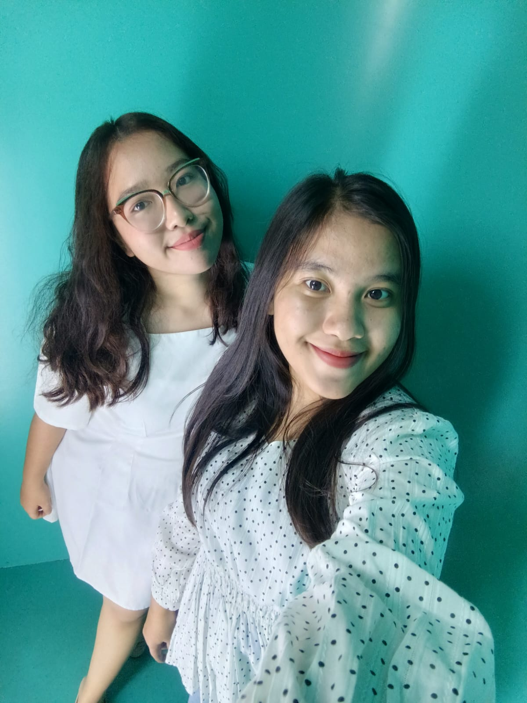
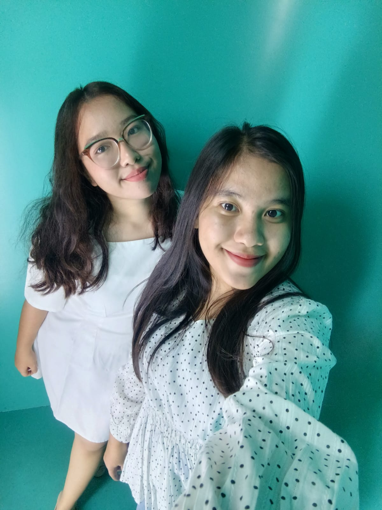

.jpg)

Dewan Perwakilan Mahasiswa FTTK
Jika anda penasaran dengan kegiatan apa saja yang dilakukan oleh DPM FTTK UMRAH? klik menu dibawah ini geyss!!
Site ProfilYou can call me yesi ..
Currently, I am a student at the Raja Ali Haji Maritime University, where I am pursuing a bachelor's degree in engineering.
Saya Adalah pribadi yang cenderung pendiam di lingkungan yang baru saya kenal. Tetapi saya memiliki tingkat penasaran yang sangat tinggi terhadap apapun, salah satunya foto dan membuat editan video. Jika anda penasaran bisa klik menu dibawah ini.
Draft YesiWalaupun saya memiliki kepribadian yang aneh dan cukup membingungkan orang sekitar, saya tetap terus yapping, cause yapping its my life. Mau ngobrol bareng aku? klik menu Join Room.
Join RoomProgram Studi Teknik Informatika. Fokus pada pengembangan aplikasi, UI/UX, dan teknologi AR/VR.
Jurusan IPA. Belajar Matematika,Fisika,Kimia dan Biologi.
Aktif dalam kegiatan PMR (Palang Merah Remaja).
Aktif dalam kegiatan Cerdas Cermat ATB.
Aktif dalam kegiatan Menari.
🟩 HTML
🟤 JavaScript
🔹CSS
🖍️ Figma
🖊️ Canva
🎹 Piano
🎸 Gitar & Ukulele
🎙️ Singing
✍🏼 Write a Song
 

"Ketika saya gabut sering mengajak teman saya jalan-jalan"
#2026 Ke Semarang Naik Gunung
Di kegiatan Organisasi Kristen LKM UMRAH.
Mensepakati aturan ormawa FTTK UMRAH.
Mengelilingi NH lupa parkir dimana.
Mengajarkan Anak SDS BINTAN Kelas 3 & 4.

Memenangkan Kontes AR Kategori BanyanTree.

Mengikuti Pelatihan Online.
Jika anda penasaran dengan kegiatan apa saja yang dilakukan oleh DPM FTTK UMRAH? klik menu dibawah ini geyss!!
Site Profil